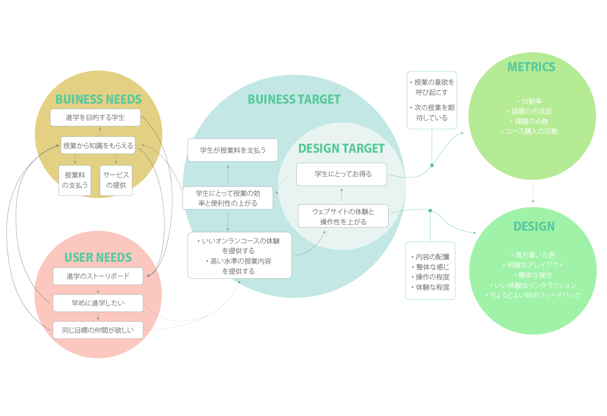

Weixin Online
Learn and practice course online
| TEAM | DATE | MY ROLE | METHODS |
|---|---|---|---|
| FAN LI | September 2018 - February 2019 | UX/UI Designer | Wireframing |
| YIBIN YAN | Competitive Analysis | Prototyping | |
| YINGYING FANG | Visual Design |

Introducitng Weixin Online
Weixin Online is a online teaching system developed for Transform Company. Tt is divided into student , teacher and administrator. Its purpose is to satisfy the needs of online teaching.Maximize the student's need for online classes, homework assignments, and the convenience of the teacher's online instruction. Then use the data to improve students' learning ability.
Quiz in the live
Goals
Before building the design concept, we first identified the business needs to gain insight into user’s needs, then define the business goals, focus on design goals, and then set metrics to measure design goals. Through the think-flows, the fuzzy 、scattered information are connected and systemized. Provides strong theoretical support for the design of the products.

Homework


Style Guide
UI Component

After the completion of 1.0, I sort the entire project. Scened the product requirements, modularized visual expression. Each component was aimed to be reused. Through a standard combination of specifications to increase design efficiency. Improve efficiency for subsequent product development.